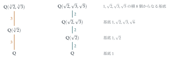

STEP II 2023、第4問
先に進む前に問題を読んでおこう。問題は、OCRが配布している2023年のSTEP問題一式（zipファイル）のSTEP IIに収録されている： www.ocr.org.uk/Images/707102-2023-past-papers.zip
導入
\(\sqrt2\) は整数係数の多項式 \(x^2 - 2\) の根である。\(\sqrt3\) も同様に \(x^2 - 3\) の根である。では、\(\sqrt2 + \sqrt3\) もまた何らかの整数係数多項式の根になるだろうか。\(\sqrt2 + \sqrt3 + \sqrt5\) や \(\sqrt[3]2 + \sqrt[3]3\) ではどうだろうか。
整数係数多項式の根となる数を代数的（algebraic）な数という。この問題は、実際に手を動かして根号を消去していくことで、代数的な数の和が代数的であることを示している。現れる次数 \(4\)、\(8\)、\(6\)、\(9\) は偶然ではない。これらはそれぞれの数がどれほど「複雑」かを測るものであり、この尺度、すなわち体の拡大次数（degree of a field extension）こそが、古代ギリシアの立方体倍積問題と角の三等分問題に最終的な決着をつけたのである。
取りかかる前に
\(\sqrt2\) を根にもつ多項式を見つけるには、\(x = \sqrt2\) の両辺を2乗して平方根を取り除く。では、異なる2つの平方根を1つずつ取り除くにはどうすればよいだろうか。
一方の平方根を片側に孤立させて2乗すれば、それは消える。次にもう一方を孤立させて再び2乗する。2乗するたびに次数は2倍になりうる。これがこの問題の戦略のすべてである。根号を1つずつ消去していくのである。
順を追って解く
段階 1 2つの平方根
\((x - \sqrt2)^2 = 3\) ならば \(x^2 - 2\sqrt2\,x + 2 = 3\) であるから、\(x^2 - 1 = 2\sqrt2\,x\) となる。2乗すると残りの平方根が消える。\((x^2 - 1)^2 = 8x^2\)、すなわち \[x^4 - 10x^2 + 1 = 0. \qed\] そして \(x = \sqrt2 + \sqrt3\) は \((x - \sqrt2)^2 = (\sqrt3)^2 = 3\) を満たすので、\(\mathrm{f}(\sqrt2 + \sqrt3) = 0\) である。■
段階 2 3つの平方根
\(x = \sqrt2 + \sqrt3 + \sqrt5\) とおくと、\(x - \sqrt5 = \sqrt2 + \sqrt3\) は \(\mathrm{f}\) の根である。\(\mathrm{f}(x - \sqrt5) = 0\) を \(P(x) + \sqrt5\,Q(x) = 0\) の形に書け。そのあと \(\sqrt5\) をどのように消去すればよいだろうか。
\((x - \sqrt5)^2 = x^2 + 5 - 2\sqrt5 x\) および \((x - \sqrt5)^4 = \bigl(x^2 + 5 - 2\sqrt5x\bigr)^2 = x^4 + 30x^2 + 25 - 4\sqrt5\,x(x^2 + 5)\) を用いて展開すると \[\mathrm{f}(x - \sqrt5) = \bigl(x^4 + 30x^2 + 25\bigr) - 4\sqrt5\,x(x^2 + 5) - 10\bigl(x^2 + 5\bigr) + 20\sqrt5\,x + 1.\] 整理すると \(P(x) = x^4 + 20x^2 - 24\)、\(Q(x) = -4x^3 - 20x + 20x = -4x^3\) である。よって \(x^4 + 20x^2 - 24 = 4\sqrt5\,x^3\) となる。2乗して \[\bigl(x^4 + 20x^2 - 24\bigr)^2 = 80x^6,\] これを展開すると \[\mathrm{g}(x) = x^8 - 40x^6 + 352x^4 - 960x^2 + 576. \qed\] （確認：\(400 - 48 = 352\) を用いると \((x^4 + 20x^2 - 24)^2 = x^8 + 40x^6 + 352x^4 - 960x^2 + 576\) であり、ここから \(80x^6\) を引けば \(\mathrm{g}\) が得られる。）
段階 3 3次方程式の根と平方根
\(x = a + \sqrt2\) ならば、\(x - \sqrt2\) は \(t^3 - 3t + 1\) の根である。代入し、\(\sqrt2\) を含む項と含まない項に分けてから2乗せよ。
\((x - \sqrt2)^3 = x^3 - 3\sqrt2\,x^2 + 6x - 2\sqrt2\) であるから \[(x - \sqrt2)^3 - 3(x - \sqrt2) + 1 = \bigl(x^3 + 3x + 1\bigr) - \sqrt2\bigl(3x^2 - 1\bigr) = 0.\] したがって \((x^3 + 3x + 1)^2 = 2(3x^2 - 1)^2\) である。展開すると \(x^6 + 6x^4 + 2x^3 + 9x^2 + 6x + 1 = 18x^4 - 12x^2 + 2\) となるので \[\mathrm{h}(x) = x^6 - 12x^4 + 2x^3 + 21x^2 + 6x - 1. \qed\] 用いたのは \(a\) が \(t^3 - 3t + 1\) の根であるという事実だけなので、同じ議論が \(b + \sqrt2\) と \(c + \sqrt2\) についても成り立つ。（\(\mathrm{h}\) の残りの3つの根は \(a - \sqrt2\)、\(b - \sqrt2\)、\(c - \sqrt2\) であり、これらは2乗したときに入り込んだものである。）
段階 4 2つの立方根
\(x = \sqrt[3]2 + \sqrt[3]3\) とおく。両辺を3乗せよ。その結果を \(x\) とただ1つの立方根を用いて表せるだろうか。
\(u = \sqrt[3]2\)、\(v = \sqrt[3]3\) として \((u + v)^3 = u^3 + v^3 + 3uv(u + v)\) を用いると \[x^3 = 2 + 3 + 3\sqrt[3]6\,x, \qquad\text{したがって}\qquad x^3 - 5 = 3\sqrt[3]6\,x.\] もう一度3乗すれば最後の立方根が消える。\((x^3 - 5)^3 = 27 \cdot 6\,x^3 = 162x^3\) である。\((x^3 - 5)^3 = x^9 - 15x^6 + 75x^3 - 125\) と展開して \[\mathrm{k}(x) = x^9 - 15x^6 - 87x^3 - 125. \qed\]
振り返り
根号は1つずつ消去する。根号を孤立させ、適切な累乗をとり、これを繰り返す。
有理部分と無理部分を分ける。式を \(P + \sqrt5\,Q\) の形に書き、\(P^2 = 5Q^2\) を用いるのが鍵となる一手である。
2乗すると余分な根が加わる。2乗するたびに、\(a + \sqrt2\) に対する \(a - \sqrt2\) のような「共役」（conjugate）な根が入り込む。最終的な多項式はそれらすべてを根にもつ。
背後にある数学
\(p\)、\(q\) を有理数とする数 \(p + q\sqrt2\) 全体の集合 \(\mathbb{Q}(\sqrt2)\) は、加法、減法、乗法、（\(0\) でない数による）除法について閉じている。すなわち、これは体（field）である。これは \(\mathbb{Q}\) 上の2次元の「ベクトル空間」（vector space）であり、基底（basis）は \(1, \sqrt2\) である。そこで、これは \(\mathbb{Q}\) 上次数（degree）\(2\) をもつという。\(\sqrt3\) を添加すると \(\mathbb{Q}(\sqrt2, \sqrt3)\) が得られ、その基底は \(1, \sqrt2, \sqrt3, \sqrt6\)、次数は \(4\) である。さらに \(\sqrt5\) も添加すると次数は \(8\) になる（図 6.3.1）。塔法則（tower law）とは、体の塔をのぼるにつれて次数が掛け合わされるという法則である。ある数が生成する体の次数は、その数の最小多項式（minimal polynomial）、すなわちその数が満たす有理数係数多項式のうち次数が最小のものの次数に等しい。この問題の多項式 \(\mathrm{f}\) と \(\mathrm{g}\) は最小多項式であることが示せるので、\(\sqrt2 + \sqrt3\) の次数は \(4\)、\(\sqrt2 + \sqrt3 + \sqrt5\) の次数は \(8\) である。実際、ただ1つの数 \(\sqrt2 + \sqrt3 + \sqrt5\) が次数 \(8\) の体全体を生成するのである。

立方体倍積問題
定規とコンパスによる作図（ruler-and-compass construction）で得られる長さは、有理数から出発して1次方程式と2次方程式を繰り返し解くことで得られるものに限られる。そのような各段階は次数 \(1\) または \(2\) の体の拡大を与えるので、塔法則により、作図可能な長さはすべて次数が \(2\) の累乗である体に属し、それ自身の次数も \(2\) の累乗となる。ところが \(\sqrt[3]2\) の最小多項式は \(x^3 - 2\) であり、その次数は \(3\) である。\(3\) は \(2\) の累乗ではないから \(\sqrt[3]2\) は作図不可能であり、紀元前430年ごろに提起された、定規とコンパスで立方体の体積を2倍にするというデロスの問題は不可能である。ヴァンツェル（Pierre Wantzel）は1837年にこれを証明し、あわせて一般の角の三等分が不可能であることと、作図可能な正多角形の分類（第 6.2 節）も示した。2000年にわたる試みは、次数に関する議論によって終止符を打たれたのである。
代数的数は体をなす
この問題の方法は、具体例を通じて、代数的数の和が代数的であることを示している。一般には、これは線形代数を用いて証明される。\(\alpha\) と \(\beta\) の次数をそれぞれ \(m\)、\(n\) とすると、数 \(\alpha^i\beta^j\)（\(i < m\)、\(j < n\)）全体は次元が高々 \(mn\) の空間を張るので、\(mn + 1\) 個の累乗 \(1, \alpha + \beta, (\alpha + \beta)^2, \ldots\) は一次従属（linearly dependent）でなければならない。これにより次数が高々 \(mn\) の多項式が得られる。ここで得た次数 \(4 = 2 \times 2\)、\(6 = 3 \times 2\)、\(9 = 3 \times 3\) はまさにこのパターンに当てはまる。代数的でない数を超越的（transcendental）な数という。\(e\) と \(\pi\) はその例であり（エルミート（Hermite）、1873年、およびリンデマン（Lindemann）、1882年）、\(\pi\) が超越数であるというリンデマンの定理によって、円積問題もまた不可能であることが証明された。
思考のスキル
根号を含む式が満たす多項式を求めるには、根号を孤立させて累乗をとることで、根号を1つずつ取り除く。
そのうえで、次数が何を教えてくれるかを問う。最小多項式の次数はその数の不変量であり、次数を比較することは、何かが不可能であることを証明するための最も強力な方法の一つである。
次の一歩
原始元（primitive element）。\(y = \sqrt2 + \sqrt3\) とする。\(y^3 = 11\sqrt2 + 9\sqrt3\) を示し、\(\sqrt2 = \frac12(y^3 - 9y)\) を導け。したがって、すべての数 \(p + q\sqrt2 + r\sqrt3 + s\sqrt6\) は \(y\) の多項式として表せる。
種類の異なる根号。\(\sqrt2 + \sqrt[3]3\) を根にもつ、次数 \(6\) の整数係数多項式を求めよ。
既約性（irreducibility）。\(x^4 - 10x^2 + 1\) は有理数の根をもたず、整数係数の2つの2次式の積として表せないことを示せ。（ヒント：\((x^2 + ax + b)(x^2 - ax + c)\) を試してみよ。）これより \(\sqrt2 + \sqrt3\) の次数が \(4\) であることを導け。
角の三等分（trisection）。\(\cos 3\theta = 4\cos^3\theta - 3\cos\theta\) を示し、\(\cos 20^\circ\) が \(8x^3 - 6x - 1 = 0\) の根であることを導け。この3次方程式が有理数の根をもたないと仮定して（これを確かめよ）、\(60^\circ\) の角を定規とコンパスで三等分できない理由を説明せよ。
さらに学ぶために
Ian Stewart, Galois Theory（CRC Press）。『ガロア理論』。体の拡大、塔法則、古典的な作図問題を、大学生向けに解説している。
Richard Courant & Herbert Robbins, What Is Mathematics?（Oxford University Press）。『数学とは何か』。第 3 章では、予備知識なしでギリシアの三大問題の不可能性を証明している。
Robin Hartshorne, Geometry: Euclid and Beyond（Springer）。定規とコンパスによる作図を現代代数学の観点から扱っている。